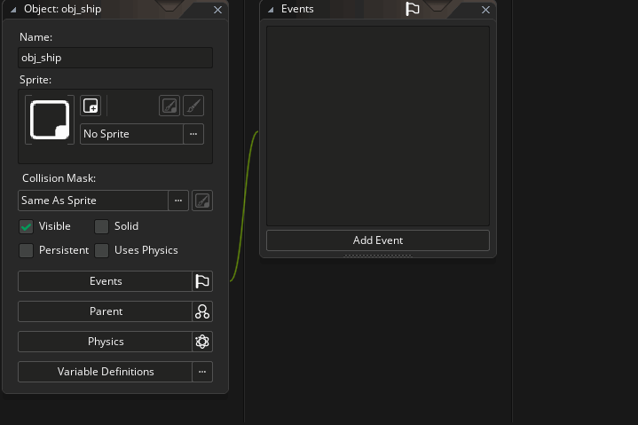

Let's jump right in and make our first object. As we did with sprites, simply go to the "Objects" resource and click the right mouse button  and select Create to create the object. Give it the name "obj_ship" to identify it, and then assign it the ship sprite we made earlier. To assign the sprite, click the button that currently says "No Sprite" and select the sprite "spr_ship":
and select Create to create the object. Give it the name "obj_ship" to identify it, and then assign it the ship sprite we made earlier. To assign the sprite, click the button that currently says "No Sprite" and select the sprite "spr_ship":

While we're at it, we'll also create an asteroid object, so do that now (create a new object) and call it "obj_asteroid". Assign this object any one of the asteroid sprites that you created. We don't need to worry about which one, as we're only going to have a single asteroid object in the game, and we'll set the sprite_index (the sprite the object will draw) using code in the Create Event. We'll come to that part in a moment, but first we'll do an experiment...
Click "Next" to continue...